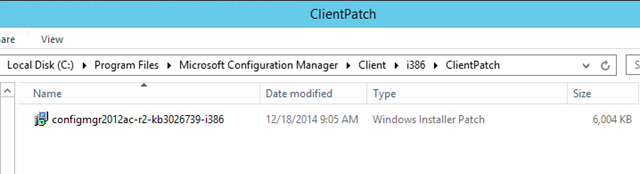
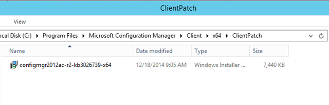
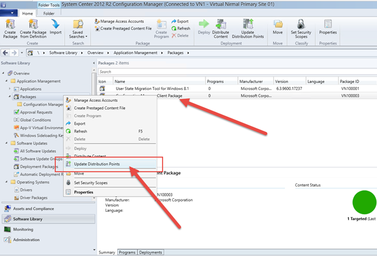
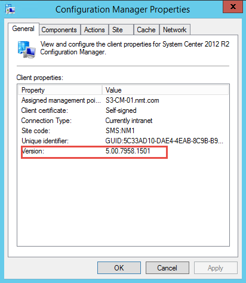
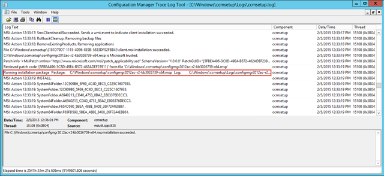

Updating Configuration Manager Client Package with Client Agent Hotfixes
This is a quick post, to detail how we can install Configuration Manager client updates as a part of Client Deployment within Configuration Manager 2012 R2. There are multiple ways to achieve this task and the below explained method would be the easiest to configure.
Problem: Due to multiple Cumulative updates for Configuration Manager 2012 R2, it’s required for us to update all Configuration Manager Clients and also any new machines that gets built will also need to be applied with client update package
Solution: Easiest method to achieve this, is to create a folder within existing Configuration Manager Client Package and then copy and paste Update msp file. By doing this when a new computer gets built or when you deploy Configuration Manager Client to a computer, you will receive updated Configuration Manager client.
Step 01 – Download and apply latest cumulative update for Configuration Manager if you haven’t done that already
Step 02 – Navigate to your Configuration Manager Client Package
For x86
C:\Program Files\Microsoft Configuration Manager\Client\i386
For x64
C:\Program Files\Microsoft Configuration Manager\Client\x64
Step 03 – Create a folder named “ClientPatch” under x86 client folder and also under x64 client folder.
Step 04 – Navigate to Configuration Manager hotfix folder to obtain Client hotfix MSP files. Copy them back to your client package source directory
C:\Program Files\Microsoft Configuration Manager\hotfix\KB3026739\Client\i386 or C:\Program Files\Microsoft Configuration Manager\hotfix\KB3026739\Client\x64
Step 05 – Now your Client Package source should look like this
x86

x64

Step 06 – One last step, is to go back to your Configuration Manager environment and update distribution points for your Configuration Manager Client Package

Once this is done, you can build a new computer using your existing Task Sequence or you can deploy Configuration Manager client using Configuration Manager console and you will notice that the update client gets deployed automatically as a part of the deployment.
So, how do we verify this 🙂 that’s the easy part. If we navigate to Control Panel and then open Configuration Manager Properties which will show you version of the installed agent

We can also verify from ccmsetup.log on a client computer
